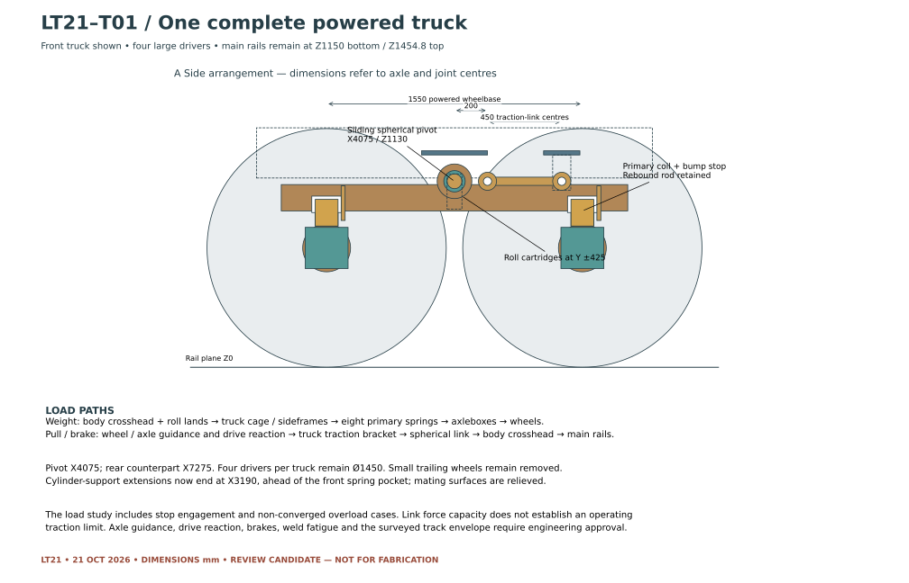
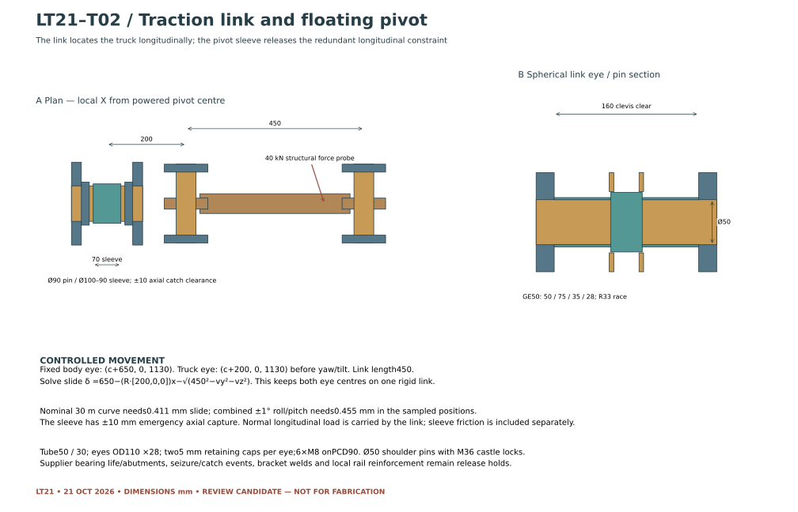
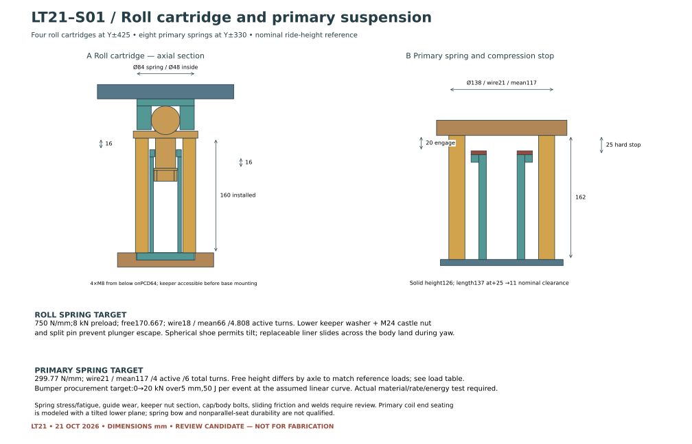

LT21 · POWERED-TRUCK SUPPORT & TRACTION · OCTOBER 21, 2026
A defined support.
A separate path for traction.
The eight-driver locomotive now has a candidate arrangement for body-roll control, pulling and braking loads, and primary compression stops. The truck locations and low body height are retained. The small trailing wheels remain removed.
Review result: suspension travel is a limiting factor. Several pulling/braking load cases reach a stop, including the 40 kN-per-truck structural probe. The proposed link and spring dimensions are review candidates; they do not establish an operating load or speed limit.
One complete powered truck
How the locomotive is supported
The centre spherical joint carries vertical and lateral reaction through the truck cage. Two captured spring cartridges per truck control body roll. Their rocking shoes slide on body-mounted lands as the truck turns. Eight primary coils support the truck frames on the axleboxes.

Pulling and braking connection
A fixed-length link connects each truck to a new body crosshead. A replaceable sleeve allows the main pivot’s inner ring to move slightly along its longitudinal pin. This removes the redundant longitudinal restraint that a rigid link and fully clamped pivot would otherwise create. Shoulders and locked nuts keep the assembly captured.

Roll and primary spring candidates
Each roll cartridge has a 750 N/mm target rate, 8 kN preload and 16 mm mechanical capture in either direction. The spring becomes unloaded at 10.67 mm extension, before the extension catch. The sampled ±1° tilt positions stay within the preloaded range. The plunger has a removable castellated keeper and split pin; the guide cartridge bolts to its lower seat.
The primary coils target about 300 N/mm each. Their free heights differ by axle to suit the preliminary weight distribution. A bumper begins engagement at 20 mm compression, followed by a steel stop at 25 mm; the LT20 rebound locks retain the 20 mm nominal droop setting.

Evidence and remaining work
- 23 sampled clearance positions: 0 rigid, 0 full-wheel-disk and 0 spring-envelope intersections.
- The curved checks include both hands of a 30 m curve, ±1° truck pitch/roll, +25/−20 mm heave and separate axle-roll probes.
- 41 reduced wheel-load scenarios include six weight budgets, uneven rail heights, lateral acceleration and pulling/braking forces. Stop engagement and non-converged cases are identified.
Spring fatigue, bearings and sliding friction, local frame reinforcement, welds, bolts, axle guidance, drive/brake reactions and the actual route remain structural-review items. The primary bumper is a force/energy procurement target; no supplier bumper or spring has been released.